| Modelo | RMSE | MAE |
|---|---|---|
| ARIMA(1,1,1) | 0.185583 | 0.0637273 |
| ARIMA(0,1,1) | 0.185578 | 0.0636919 |
| ARIMA(1,1,0) | 0.184396 | 0.0523711 |
| ARIMA Auto | 0.186436 | 0.0643341 |
| Prophet | 0.213200 | 0.131596 |
| Holt-Winters | 0.199446 | 0.115416 |
| MLP | 0.190048 | 0.0755966 |
| LSTM Modelo 1 - 1 - Units: 32, Batch: 16, Epochs: 30, Optimizer: adam | 0.197128 | 0.113308 |
| LSTM Modelo 1 - 2 - Units: 64, Batch: 32, Epochs: 50, Optimizer: adam | 0.204764 | 0.133732 |
| LSTM Modelo 1 - 3 - Units: 64, Batch: 16, Epochs: 40, Optimizer: rmsprop | 0.462503 | 0.443123 |
| LSTM Modelo 1 - 4 - Units: 128, Batch: 32, Epochs: 60, Optimizer: adam | 0.189733 | 0.0734671 |
| LSTM Modelo 2 - 1 - Units: 32, Batch: 16, Epochs: 30, Optimizer: adam, Dropout: 0.2 | 0.223941 | 0.153232 |
| LSTM Modelo 2 - 2 - Units: 64, Batch: 32, Epochs: 50, Optimizer: adam, Dropout: 0.3 | 0.188647 | 0.0679398 |
| LSTM Modelo 2 - 3 - Units: 64, Batch: 16, Epochs: 40, Optimizer: rmsprop, Dropout: 0.25 | 0.197485 | 0.101310 |
| LSTM Modelo 2 - 4 - Units: 128, Batch: 32, Epochs: 60, Optimizer: adam, Dropout: 0.2 | 0.241229 | 0.179526 |
Tras revisar las gráficas de predicción de todos los modelos LSTM, se identificó que el modelo que mejor se adaptó visualmente a los datos reales fue:
LSTM Modelo 2 – 2 (Units: 64, Batch: 32, Epochs: 50, Optimizer: adam, Dropout: 0.3)
Este modelo:
|
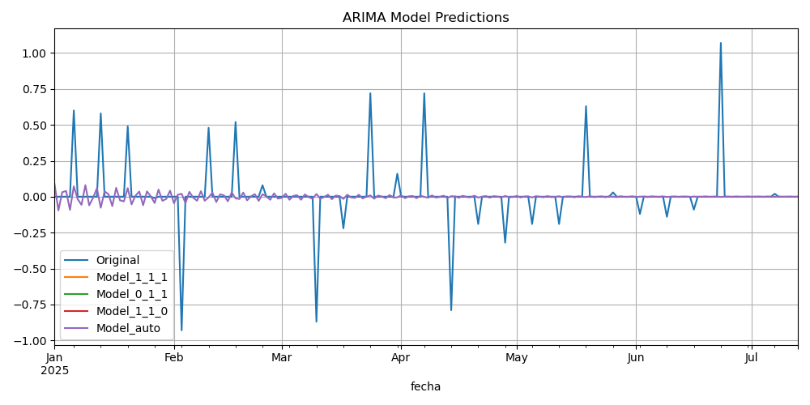 |
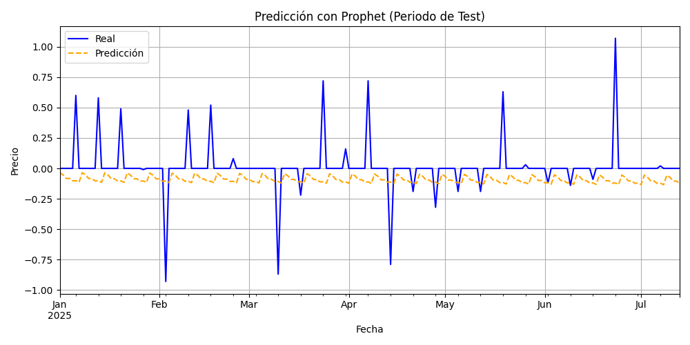 |
|
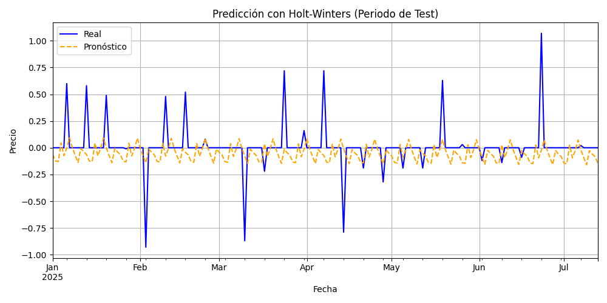 |
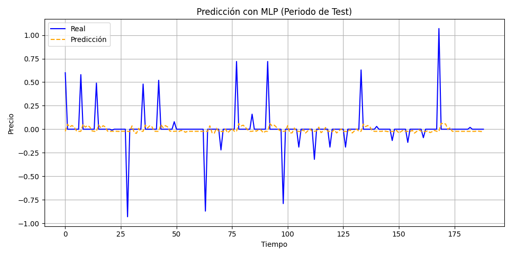 |
|
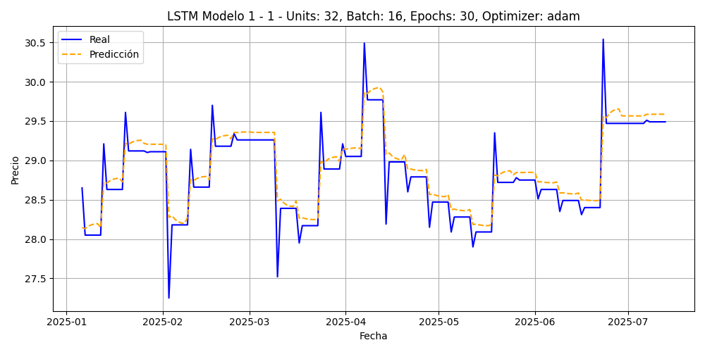 |
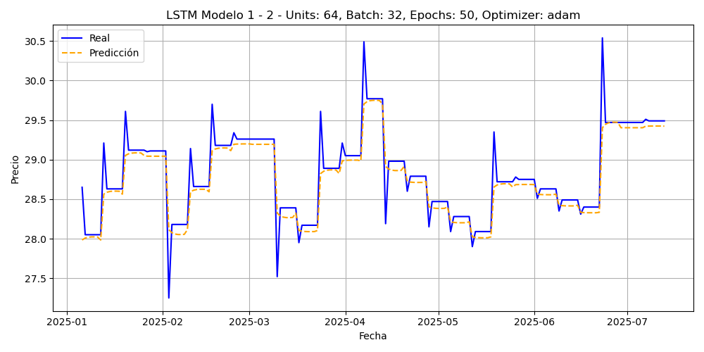 |
|
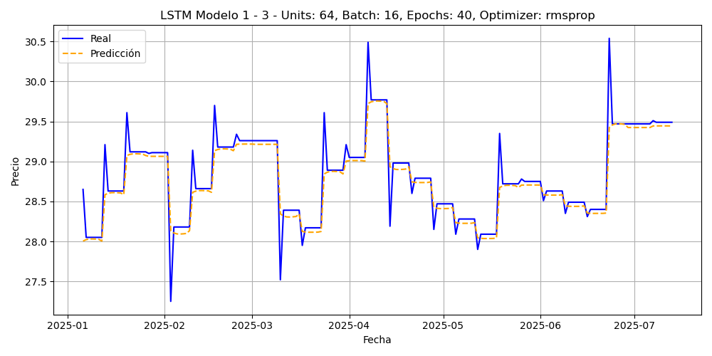 |
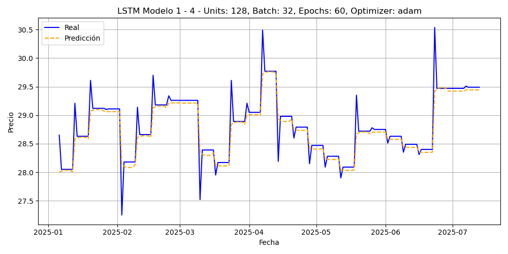 |
|
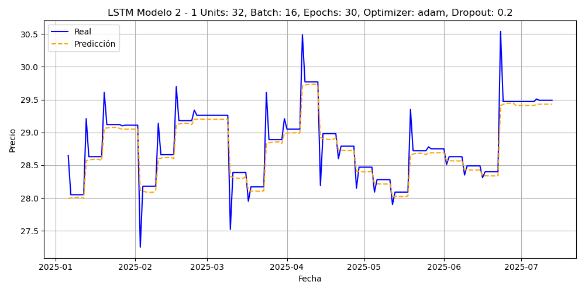 |
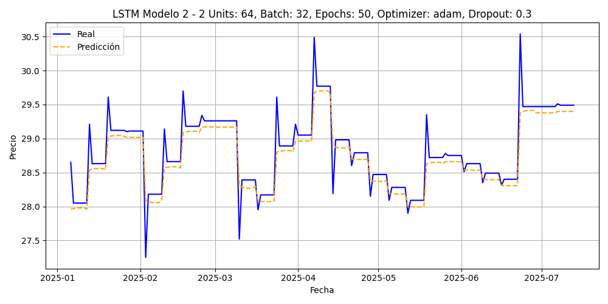 |
|
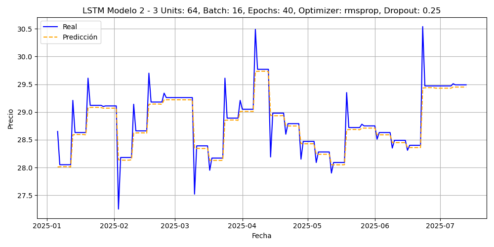 |
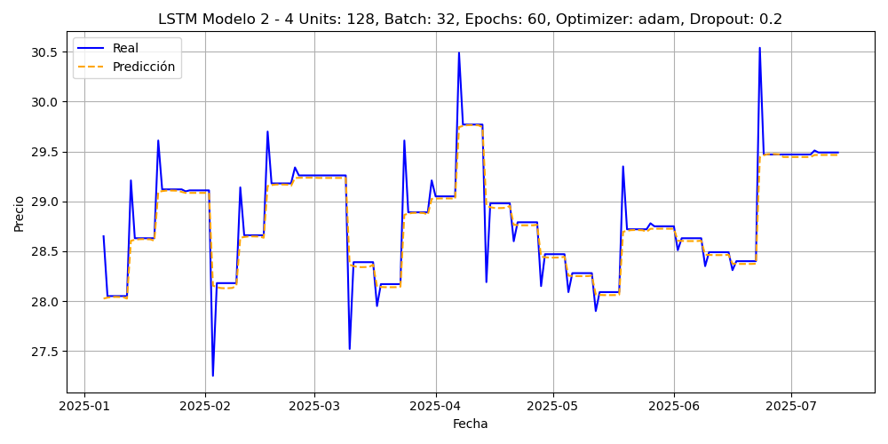 |
Si el objetivo es minimizar el error promedio, los modelos ARIMA siguen siendo competitivos. Sin embargo, si se busca un modelo con mejor capacidad de capturar dinámicas reales y abruptas, los modelos LSTM (especialmente Modelo 2 – 2) son más adecuados, aunque con un pequeño costo en RMSE.
En función de las métricas y el comportamiento visual, el mejor modelo globalmente fue LSTM Modelo 2 – 2, al equilibrar precisión numérica con una representación realista del comportamiento del mercado.